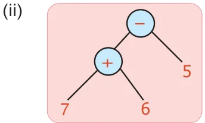
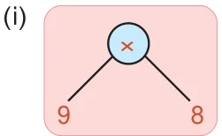
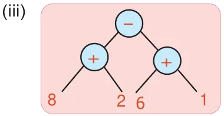
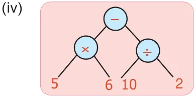
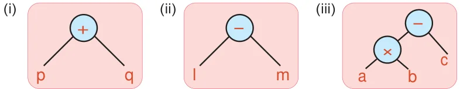
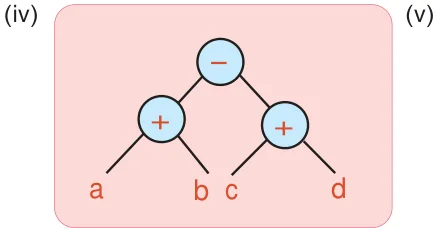
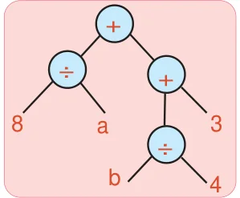

- 1.Convert the following numerical expressions into Tree diagrams.
- (i)\(8 + (6 \times 2)\) (ii) \(9 - (2 \times 3)\)
- (iii)\((3 \times 5) - (4 \div 2)\) (iv) \([(2 x 4)+2] \times (8 \div 2)\)
- (v)\([(6 +4) \times 7] \div\) [ \(2 \times (10 - 5)]\) (vi) \([(4 \times 3) \div 2] + [8 \times (5 - 3)]\)
- 2.Convert the following Tree diagrams into numerical expressions.




- 3.Convert the following algebraic expressions into tree diagrams.
- (i)10v (ii) \(3a - b\) (iii) 5x+y
- (iv)\(20t \times p\) (v) 2(a+b) (vi) (x x y) - (y x z)
- (vii)4x+5y (viii) (lm - n) \(\div (pq+r)\)
- 4.Convert Tree diagrams into Algebraic expressions.


